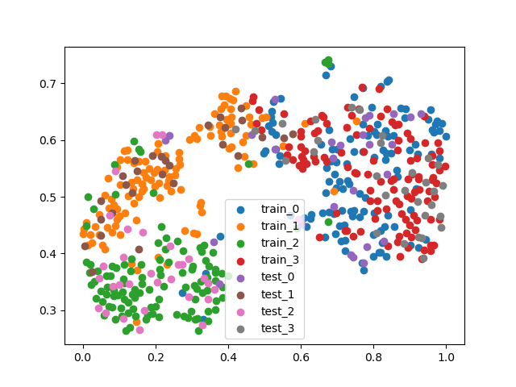
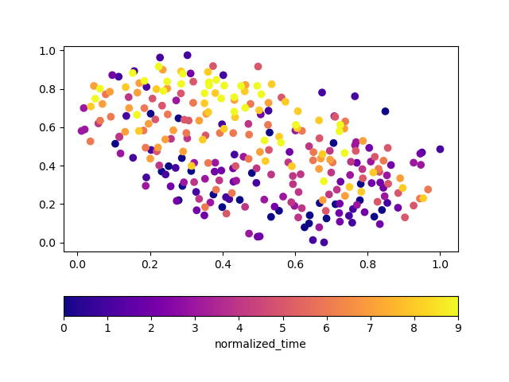

Analysis of EEG features¶
Import necessary packages:
from Offline.datasets.moabb import MOABBDataset,moabb_dataset_list
from Offline.profile.manifest import BugZero
from Offline.processing.preprocess import Preprocessor
from Offline.models.CSP.FBCSP import FBCSP
from Paradigm.base import OfflineParadigm
from copy import deepcopy
from Offline.trainning.Factory import CSPFilter,CSPFactory
from Offline.trainning.Analysis import classifibility
Define datasets, preprocess pipeline and model:
datasets = {
1: MOABBDataset(dataset_name=moabb_dataset_list[1][0],subject_ids=[1]),
2: MOABBDataset(dataset_name=moabb_dataset_list[1][0], subject_ids=[2]),
}
preps = {
1:[Preprocessor('pick',picks='eeg'),
]
}
Define algorithm to train and analyze feature:
algs = {
1:CSPFactory(Model=FBCSP),
2:CSPFilter(filter_func=classifibility,model=None)
}
Now define paradigm:
para = OfflineParadigm(datasets=datasets,protocols=None,algorithms=algs,control_signal_mode='active',preprocess=preps)
Difine model and start training:
from sklearn.svm import SVC
fbcsp = FBCSP(sfreq=250,time_steps=1000,window_start=0,window_length=1000,clf=SVC(probability=True),select_ratio=0.6,l_freq=4,h_freq=38,n_cuts=10)
model, (train_X,train_y), (test_X,test_y) = para.train_model(preprocesser_id=1,algorithm_id=1,dataset_id=1,model=fbcsp,subject_mode='subject_dependent',train_mode='hold_out',
trial_start_offset_seconds=0,trial_end_offset_seconds=0,train_r=0.8,n_fold=None)
Visualization of Train-Test data distribution using t-NSRE¶
Check Train-data and Test-data’s distribution:
para.algorithms[2].compile(model)
para.algorithms[2].visualize_train_test_dist(train_X=train_X,train_y=train_y,test_X=test_X,test_y=test_y)
results are shown below:
Visualization of features over-time¶
Check time-cource of the transformed feature:
para.track_time(preprocesser_id=1,algorithm_id=2,dataset_id=2,trial_start_offset_seconds=0,trial_end_offset_seconds=0,model=model,n_inter=10,
session_id='session_E')
results are shown below:
